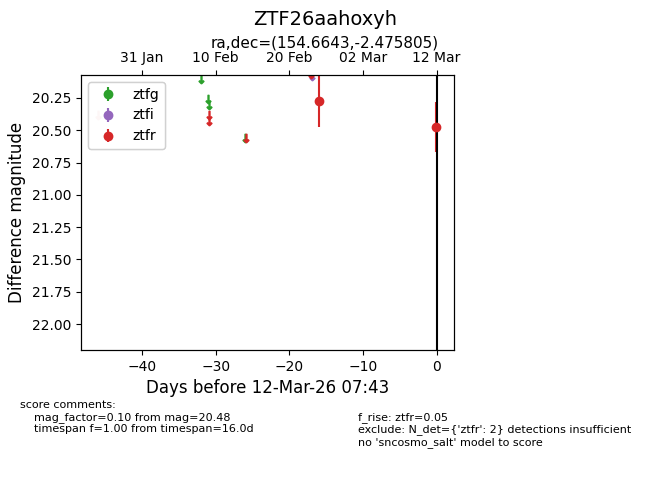
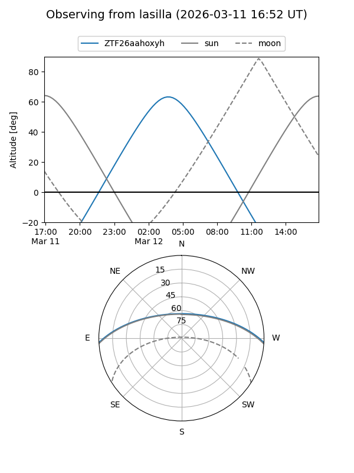
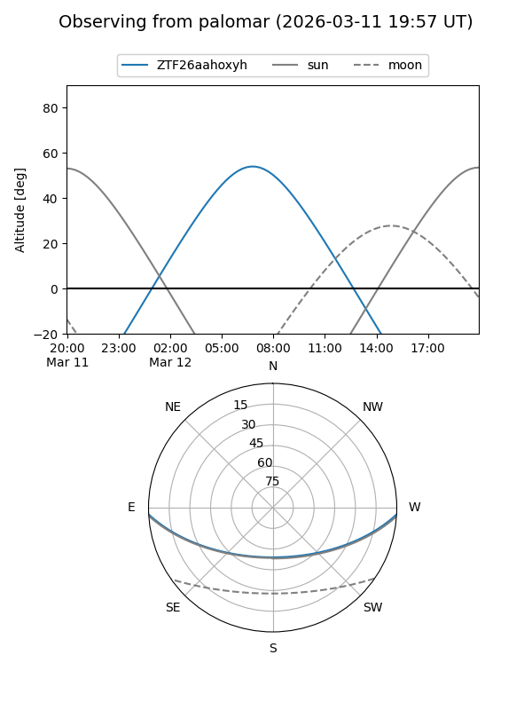

ZTF26aahoxyh
Target ZTF26aahoxyh at 2026-03-12 07:44
Aliases and brokers:
FINK: link
Lasair: link
ALeRCE: link
alt names
ZTF26aahoxyh (ztf,fink_ztf)
Coordinates:
equatorial (ra, dec) = 154.6643,-2.47580
equatorial (HMS+DMS) = 10:18:39.44,-02:28:32.90
galactic (l, b) = (245.6237,+42.77333)
Flags:
Photometry:
last ztfr=20.48
2 ztfr detections
Lightcurve

Visibility


Additional plots